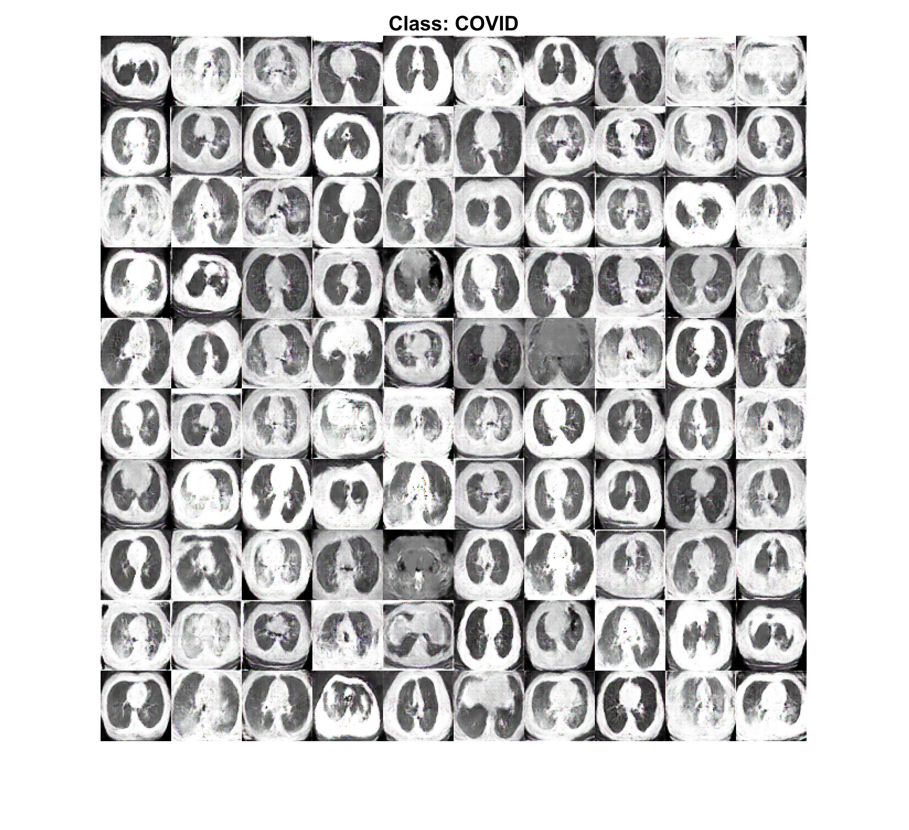
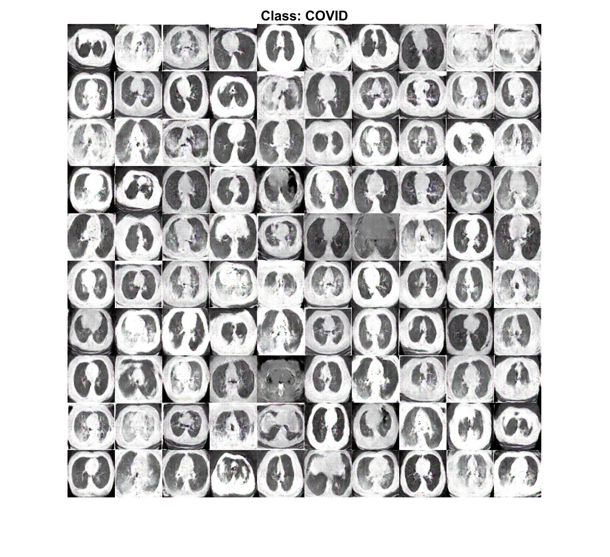

A Deep Transfer Learning Model with Classical Data Augmentation and CGAN to Detect COVID-19 from Chest CT Radiography Digital Images
Abstract
The Coronavirus disease 2019 (COVID-19) is the fastest transmittable virus caused by severe acute respiratory syndrome Coronavirus 2 (SARS-CoV-2). The detection of COVID-19 using artificial intelligence techniques and especially deep learning will help to detect this virus in early stages which will reflect in increasing the opportunities of fast recovery of patients worldwide. This will lead to release the pressure off the healthcare system around the world. In this research, classical data augmentation techniques along with Conditional Generative Adversarial Nets (CGAN) based on a deep transfer learning model for COVID-19 detection in chest CT scan images will be presented. The limited benchmark datasets for covid-19 especially in chest CT images is the main motivation of this research. The main idea is to collect all the possible images for covid-19 that exists until the very writing of this research and use the classical data augmentations along with CGAN to generate more images to help in the detection of the COVID-19. In this study, five different deep convolutional neural network-based models (AlexNet, VGGNet16, VGGNet19, GoogleNet, and ResNet50) have been selected for the investigation to detect the Coronavirus infected patient using chest CT radiographs digital images. The classical data augmentations along with CGAN improve the performance of classification in all selected deep transfer models. The Outcomes show that ResNet50 is the most appropriate deep learning model to detect the COVID-19 from limited chest CT dataset using the classical data augmentation with testing accuracy of 82.91%, sensitivity 77.66%, and specificity of 87.62%.


 



Dataset
Download dataset from Kaggle
Reference
Loey, M., Manogaran, G. & Khalifa, N.E.M. A deep transfer learning model with classical data augmentation and CGAN to detect COVID-19 from chest CT radiography digital images. Neural Comput & Applic (2020). https://doi.org/10.1007/s00521-020-05437-x